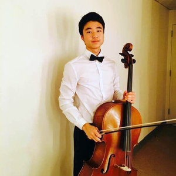
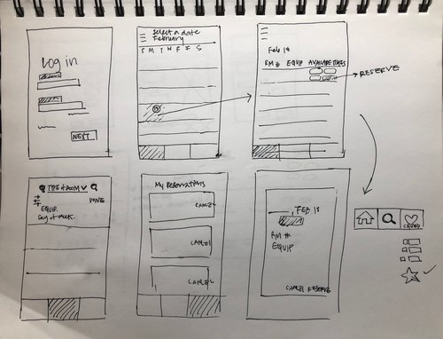
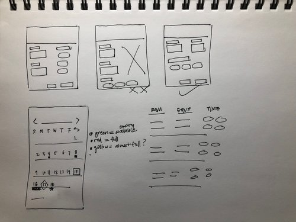
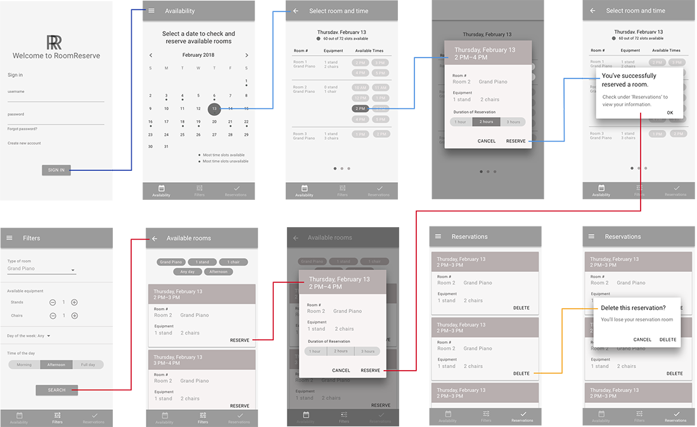
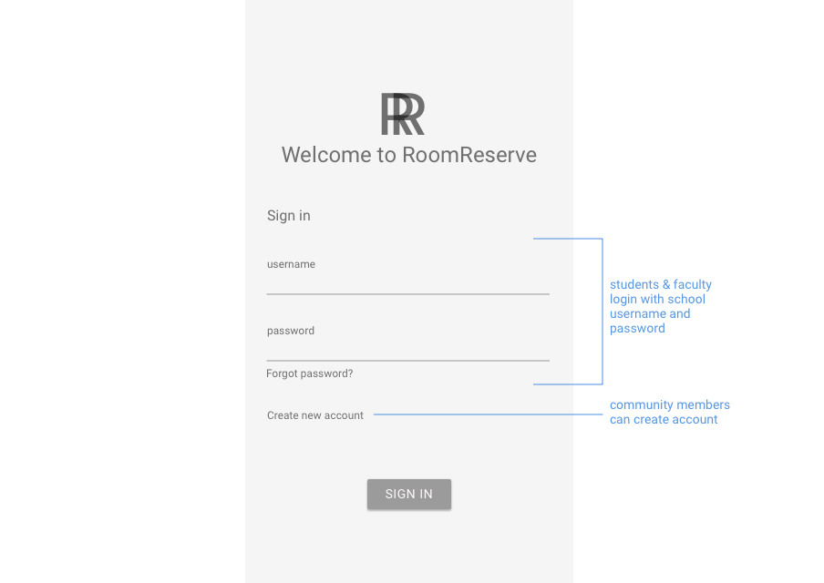
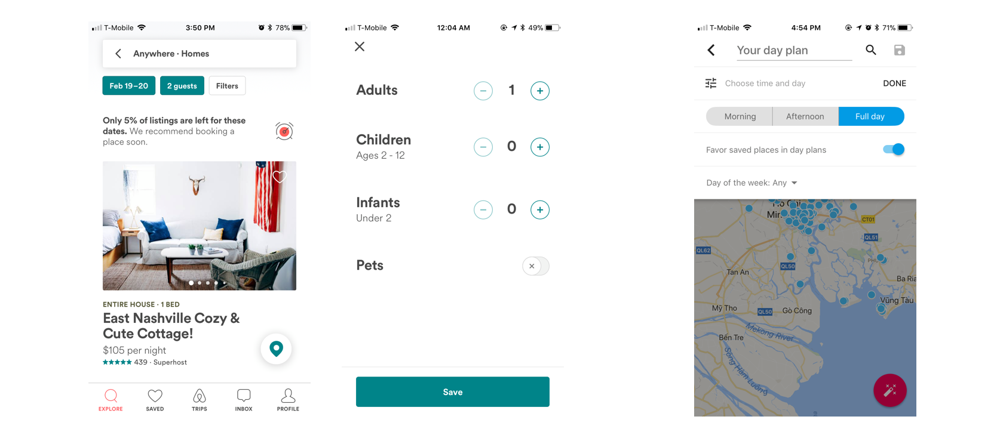
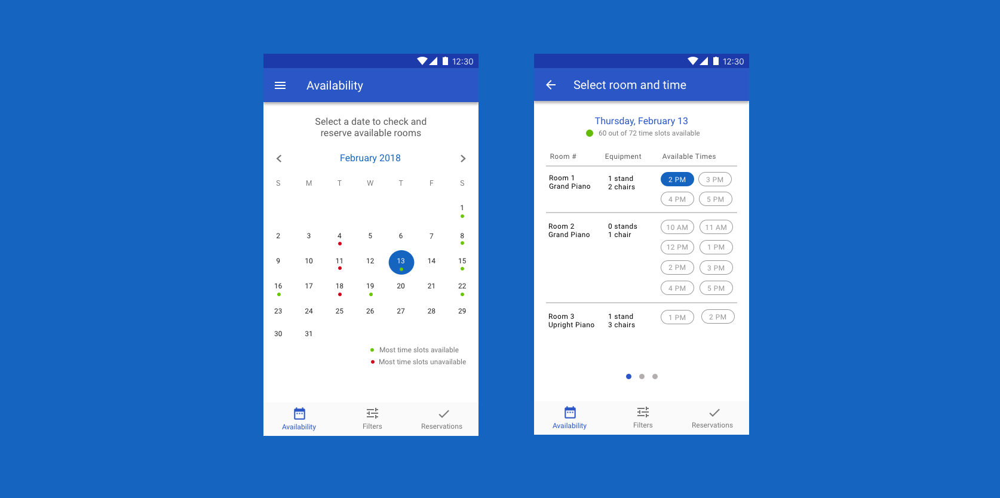

Design Process
1. Research: What is the current music rehearsal space reservation process at UCSD like? How do people interact with the space? What is the overall experience?
2. Gather insights, define problems: What are the users' goals and pain points? What are the underlying problems?
4. Ideate and execute design solutions: How can we remove pain points and help users effectively accomplish their goal? How do other existing reservation systems operate, and what can we learn from them? Based on discovered problems and needs, how can we design to provide the best experience?
5. Gather feedback, iterate: How can the design be improved?
6. Reflect: What did I learn? How can I improve as a designer?
Research
UC San Diego: Conrad Prebys Music Center
To get a better understanding of the current practice room reservation and usage experience, I spent several days researching, observing, and interviewing at UCSD's music facility.
Online Research: OK google, how do I use the music practice
rooms at UCSD?
Unfortunately, UCSD's Department of Music website does not have any information in regards to reserving and using practice rooms at the Conrad Prebys Music Center. I checked under 'Resources' as well as 'Facilities' but could not find any relevant information. The second result on google search? Several Reddit threads asking about music rooms at UCSD.
Observations: How are the practice rooms structured?
Thanks to the Reddit threads, I was able to find out where the practice rooms were located on campus. Currently, the practice room reservation is a first come first serve basis, with paper sign-ups for the week (Monday–Sunday) posted on each practice room door. There are also different types of practice rooms: General Practice rooms, Graduate pianist practice room, Indian Music Practice Room, etc.
Interviews: How do people feel about the space and reservation process?
I interviewed students from different backgrounds, teaching assistants, professors, and individuals waiting/looking for empty practice rooms to understand their expectations, views, and experiences with practice rooms.
I wrote down important quotes, insights, and keywords. I then looked for common themes and patterns– connecting the dots.

Insights
By grouping common themes, I uncovered the following insights and summarized the main supporting evidence below:
There is a definite lack of clarity regarding room reservation policies and procedures (both online and at the present site), resulting in people disregarding the current registration system and resorting to assumptions ("I guess this is how it works around here").
Important questions were left unanswered: Where are the music rehearsal spaces located? When do they open and when do they close? What is the time limit? How many times am I allowed to reserve the space in a given time period? What amenities are in each room? What are the general rules I should follow?
When the practice room space was especially busy, students lingered outside the rooms waiting for them to empty out. But, of course, they don't end up getting the room despite the time spent waiting. This is a result of people not using the paper sign-up system and instead following the first come first serve consensus, where people just use an empty room if they find one.
Checking availability of the rooms is impossible without physically exploring the space. The requirement to sign-up in person every week to get a guaranteed spot is more of a hassle than it is efficient, because students don't end up following it, due to busy personal lives and schedules. Some students did not like the fact that they can only reserve a week in advance because it gives them less time to plan for future events and preferred to reserve a room a month or more in advance.
I also learned that it is helpful for students to know generally how busy the rooms are (in the current system, students have to come in to check or predict based on patterns).
Personas:
Based on the insights gathered from research, I created personas to empathize with users and to note their behaviors.

Daniel, undergraduate student
“My two passions are computer science and cello performance, and I didn’t want to give either of them up in college, so I decided to double major. While I’m extremely grateful to be given the educational opportunity to explore both fields, it is tough balancing the two. My schedule is always packed and though I try to practice as much as possible for my music classes, it’s difficult to do because there’s no way for me to check whether practice rooms are available when I have to go in person to check– mind you, I play cello and it’s quite a big instrument to carry around. It’s also not only about whether a practice room is open, but which room is available for me to use. I absolutely need a music stand and a chair to practice, but some rooms in the music building don’t have either. So essentially to even look for available practice rooms I have to lug around my huge cello in hopes that there are available rooms– but that’s not always the case. I know I can come in early in the week to put my name on the sign-up sheet, but sometimes I don’t have the time to come in every single week to schedule rehearsal room reservations, which can be a hassle. For me, making the most out of my time is really important– I want to be able to access information, schedule way in advance, and practice as efficiently as possible. I don’t want to sacrifice my performance quality because I could not practice enough or effectively.”
Lauren, music professor
“I teach a few fundamental music classes and do private lessons as well. I love my job because it’s extremely rewarding to see students make small improvements week by week. I schedule several listening sessions throughout the week. For these office hours I use the upright piano rooms, which are practical to help students with basic skills, such as achieving the correct pitch and rhythm. I oversee ensemble practices as well. It’s important for me to have access to bigger rooms with space and equipment for multiple people. Especially because scheduling sessions with students is in itself quite a big task, it is that much more frustrating when we cannot get access to the right rooms, despite the effort it took to set a date and time for us to meet. It’s definitely not easy scheduling sessions (especially with all the other responsibilities I have managing music courses), but I try my best to invest time and effort to make sure that students who are seeking improvement, mentorship, and critiques are receiving a quality learning experience.”
Maya, community member
“I recently moved to San Diego for a full-time job at an accounting firm. I’ve played the piano ever since I was young, and though I didn’t pursue a career in music, it has always been a hobby of mine. I like to learn and practice pieces on my own– it gives me a sense of mind and peace in the midst of my fast-paced, busy life. Right now, I'm not set on buying a piano, and I prefer not to get cheap piano keyboards because I want to produce more quality music when I do have time to practice (with a full time job, it’s definitely not easy to make time). I'm looking for a place to practice music nearby. I want to find available rooms with a grand piano and reserve in advance so that I can plan around my work schedule to practice.”
Brainstorm:
Based on the research, insights and personas, I defined the main user goals for checking availability and reserving the music rehearsal space. Through the new room reservation system, users should be able to...
•Access general information: Where are the reservation rooms located? What are the room policies? (Time limit? How many times can I reserve spaces in a given time frame?)
•See types of rehearsal rooms and musical amenities available: Grand piano or another instrument? Music stands? Chairs?
•See list of open hourly time slots for each room and hourly time slots available for a specific date.
•Be able to reserve a room remotely months in advance.
•Get a better understanding of when the space is more or less busy.
Before I started designing, I conducted more research on existing reservation systems.
The Colburn School, a performing arts school in LA
To see the navigation of the Colburn's rehearsal room reservation service, I asked a current music student to talk through the process of reserving a grand piano practice room at 3PM.
User journey
1. Login with email and password
2. See list of rooms available + times (hourly and 15min intervals)
3. Scan for available times (Yellow highlight: reserved times, Green highlight: available times)
4. Choose time, choose duration (2 hr max)
5. Review reservation information
6. Click reserve – see updated information
7. Take picture of room reservation information on phone
Insights:
One negative aspect was the inability to reserve practice rooms remotely or earlier beforehand. The current system is designed for reserving for the day through quick on-the-spot transaction– sign up and then practice right away (or in a couple of hours), which leaves no room for planning days, weeks, or months advance.
However, there were many positive aspects as well. The screen displays both the types of rooms available and the available/unavailable times on one page so users can visualize the whole list of offered rehearsal rooms, weigh the different options, and choose a space. Before reserving a room, the system shows the reservation information (date/time/room/duration), which helps users recognize as opposed to recall their choices and serves as a great reminder before clicking 'Reserve.' After reserving a space, users can see the updated information at the top of the navigation, easily accessible and removable (in the case of cancellations or accidental reservations – ability to recover from errors).
I noticed that the user had to take a picture of the screen to take note of the room number, time, and access code. One way the system could exceed expectations (not just meet them) is to send reservation confirmation via email or text as opposed to relying on the users to remember or write down reservation information. Later, this observation helped me make the decision to design for mobile, so that users can directly check, reserve, and access their reservation information on their phones.
User Flow:
I mapped out possible screens corresponding to the main goals of checking practice room availability and reserving a practice room, as well as additional useful information.
Use cases:
•User wants to know general information: practice room location, times, rules and regulations
•User wants to search all available rooms and times on a given date to see the different options and compare them
•User wants to filter rooms by specific room, available equipment, day of the week, etc
•User wants to view their reservation dates and times (and cancel if needed)
At first I tried to synthesize the use cases into one or two main navigations. I asked myself: Can I add general practice room information above the list of available rooms and times? Should general information (FAQ/Help/About) be a main navigation? Should users access filters as they choose a date to check available rooms and times?
I realized that combining different user goals into one or two navigations was not a smart idea because 1. the details may appear cramped, forced, and displaced and 2. it complicates as opposed to simplify tasks (user wants to see all available rooms and times on a specific date vs. user has preferences for a specific room/equipment but is flexible with date– two very different goals).
I decided to create three main navigations (Availability, Filters, and Reservations) and a side navigation for general information (About).
Sketches:


Wireframes:
Using Google Material Design Guidelines

Sign In
Availability

Sign In
Designed for students and faculty as well as community members.

Availability
Users can see all available rooms and times on a specific date.
One insight I got from research was that people want to know generally how busy or free practice rooms are, so they can strategically plan when to use the rooms. I wanted to design a way for users to check current traffic and see patterns. I did so by displaying available time slots on any given day.
I created multiple iterations, testing designs that had green circles indicating many slots available, yellow indicating almost full, and red indicating full. However, based on feedback, users did not fully understand the correlation between the colors and its implications.
I simplified the design to have two main colors: green to indicate that most time slots are available (around 70% or more) and red to indicate that most time slots were unavailable (around 70% or more). By noting only the extremes (not "kind of full" or "average"), the design would prove more useful and meaningful. This feature would be useful for users to plan ahead, such as:
• taking advantage of less busy days
• urgently reserving a room when they need to practice on a certain day and the rooms are almost full
• avoiding practice (or reserving in advance) on specific days of the week that is always busy
Inspired by Colburn School's registration system which displays every room and time, I wanted to give users an overview of all the possible options, especially in the case when they are looking for a room, not a specific one. This will allow users to compare different available rooms and weigh their options to make the best decision based on the type of room, equipment available, and available times.
Filters
Users can find practice rooms based on their preferences, such as type of room, available equipment, day of week, and time of day.
I researched how other apps utilize the filter feature.
•Airbnb displays current filters when they are used (shows system status).
•Google Trips has filters such as 'Time' and 'Day of the week', which would be helpful when users want to narrow their options without being too restrictive (specific date or specific time).


Reservations
Users can view and cancel their practice room reservations.

About
Users can access basic information such as practice room location, hours, contact, map of layout, and general information in the navigation drawer.
The lack of information regarding practice room rules and reservation policies was an obvious problem as I was interviewing people. Some individuals even blamed themselves and their language skills for not knowing how the current reservation system works.
Given that there are no resources readily available to answer such questions, this is a design error, not a human error. The 'About' page addresses a big problem, communicates essential information, provides clarity, and can lead to a better overall experience off-screen as they interact with the physical space.

The simple act of providing sufficient information and direction also serves the student center's business interests to attract people to the space and to be a reliable resource to students, professors, and community members.
High Fidelity:
I used Material Design's Color Tool for a complementary color scheme.

Reflection:
What did I learn?
1. Do not fear, research is here.
Throughout the process, I spent a lot of my time conducting research, both online and on the field because I wanted to gather as much useful information as possible. However, because I knew I had to organize and analyze the data and artifacts, I was worried I would not have enough time to brainstorm and execute quality designs. I was afraid of not finding the right solution, whether it be due to a lack of time or creativity, or both. However, the more I gathered and analyzed research, the clearer the problems became and subsequently, the faster and better the solutions came. I realized that the real problems and right solutions exist not in my own head, but outside of it– in the real world.
2. Learn the pattern.
One of the insights I gathered from research is that people had a general sense of when reservation rooms were most occupied or free (i.e. busy during finals week, not busy on weekends), and used that information to their advantage. One professor recalled that when he was music student decades ago, he would figure out when the best and worst times were to practice. This was a common behavior in current students as well. I understood the importance of noticing the way people think, especially in design. I noted this subtle tendency and designed a way for people to know the general traffic of the practice rooms and to reserve with the displayed information in mind. I learned to be attentive to patterns in human behavior and way of thinking.
3. Do the right deed and design for the need.
At first, I questioned whether designing an 'About' page was off-tangent to the main task of checking and reserving practice rooms. However, because I saw a widespread problem regarding the lack of information in the current reservation system, I knew it was something that needed to be addressed. Though it may appear unimportant, it provides essential information that can lead users to have a positive experience using the new system and physical space. I was reminded of how important it is to design for the real need, regardless of how small the solution may seem.
I'm grateful for the learning experience completing the design challenge and I was able to proceed to the next round.